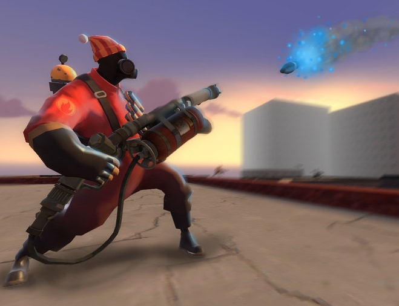
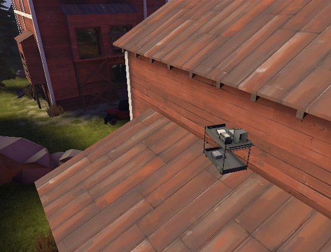
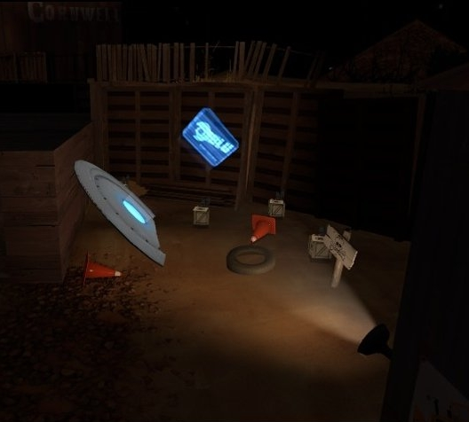

Other Gamemodes
Community game mode mods are custom, unofficial game modes, produced by talented community members. They vary from remakes
of Team Fortress Classic game modes to completely original modes, and may change anything about the way a class works from
their core mechanics to the weapons they carry. Some modes even add new enemies for the RED and BLU teams to fight, or put
the player in the shoes of someone or something they couldn't play in an official mode. Some game mode mods have been
honorably mentioned by Valve on the TF2 Official Blog.

A Pyro attempting to airblast a rocket that is approaching at high speed.
Dodgeball
In Dodgeball, everyone plays as the Pyro. Rockets and nuclear bombs are fired from a pre-determined spot in the map. Each
team of Pyros uses their compression blast ability to reflect the rockets and bombs back at the other team.
These projectiles are designed to follow one targeted player until deflected by an air blast. When the projectile is air
blasted, its affinity and color changes and it targets a random player on the opposite team. It gains speed with each
deflection until the projectile's new target does not successfully deflect it, damaging or killing the target. The rocket
can also be reflected into the ground to allow the player to survive and reset the rocket, and even rocket jump.
Gameplay continues until one team is eliminated entirely. Players are usually continuously supplied with ammunition via
the map or a custom Flamethrower.
There are two types of projectiles used: the rocket and the nuclear bomb. The rocket looks like a standard Soldier's
critical rocket with the same damage as a normal critical rocket. The "nuke" rockets are larger, slower, and usually
appear in the form of the bomb attached to most Payload carts and bleeps like a Level 1 Sentry Gun. These bombs have
a much bigger area of effect and a much higher damage output, able to kill anyone within its blast radius. As a
result, players tend to pay more attention to reflecting nukes.

A player hiding on a roof, disguised as a computer cart.
Prophunt
PropHunt plays much like a cross between the standard Arena Mode and the game "Hide and Seek". Players on the RED team, disguised
as "props", are given a 30 second set up time to hide, and afterwards players on the BLU team attempt to find and kill them in the
allotted time period. At the end of each round the teams are swapped; the "Hunters" (BLU) become the "Hunted" (RED) and vice versa.
Respawns are not permitted until the end of each round.
Players on the RED team are forced to play as Scouts and are randomly assigned the appearance of a map prop at the start of each
round. They are not able to make use of their weapons unless they are the last player on their team. Passive item effects, like
the Sandman's health penalty, will influence the player as normal. In addition, the RED team is unable to drown, which enables
them to hide underwater.
Firing a weapon or swinging a melee weapon will cause members of the BLU team to slightly damage themselves. This is intended
to give players a reason to focus on suspicious props rather than shooting everything in sight. To reward successful hunters,
members of the BLU team who score a kill or kill assist are restored to full health and granted a small speed boost for as
long as they keep their current weapon out.
Health pickups are generally limited on Prop Hunt maps, although Prop Hunt maps universally feature a central, unable to be
captured control point that will fully heal a player passing over it once every 55 seconds (tracked individually for each player).
BLU or RED win the round if all members of the opposing team die. RED is able to win by staying alive until the end of the round's
duration, at which point all BLU players are automatically slain and the victory awarded accordingly. If there is only one RED prop
left the remaining BLU team members are Jarated and they are allowed to shoot at the BLU team members.

A Capturepoint on a modified version of cp_dustbowl. Note the darkness and the extra items.
Zombie Fortress
Zombie Fortress is a SourceMod plugin and unofficial game mode for Team Fortress 2. There are two opposing teams: the Survivors
(RED) and the Zombies (BLU), who wish to eat the Survivors. Survivors need to complete their objective, which may vary depending
on the game mode. Survivors have the advantage of having ranged weaponry while the Zombies have the main advantage of having the
ability to respawn and convert slain Survivors into Zombies. When a Survivor is killed, they are switched to the Zombie team.
When no Survivor players remain, the Zombie team wins. One could compare the game mode to a mix between Arena and Medieval Modes,
respectfully, each affecting a different team simultaneously.
The Survivors and Zombies can only select certain classes. The Survivors can choose the Soldier, Pyro, Demoman, Engineer, Medic,
and Sniper classes. They are armed with regular weapons and several perk choices for modified effectiveness against the Zombies.
The Zombies can only choose the Scout, Heavy, and Spy classes (which are only equipped with their melee weapons), most lunchbox
items (such as Bonk! Atomic Punch, and Sandvich), a choice of perks, and the ability to use Kill taunts.